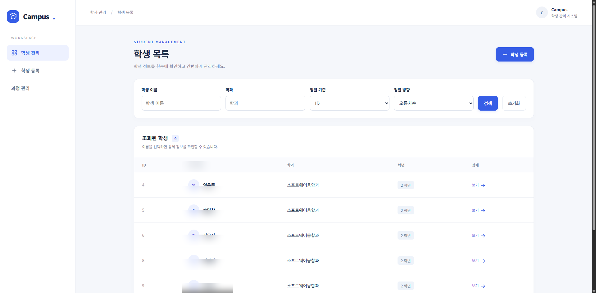
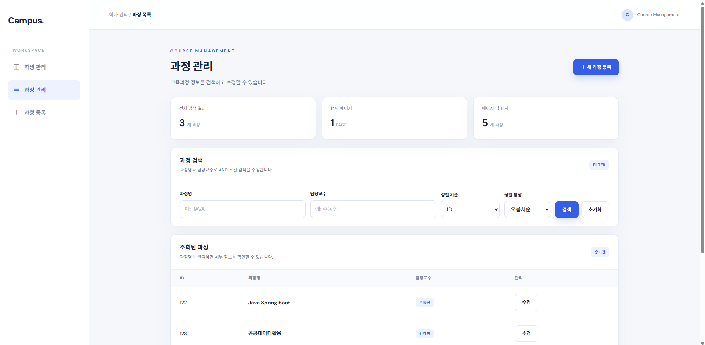
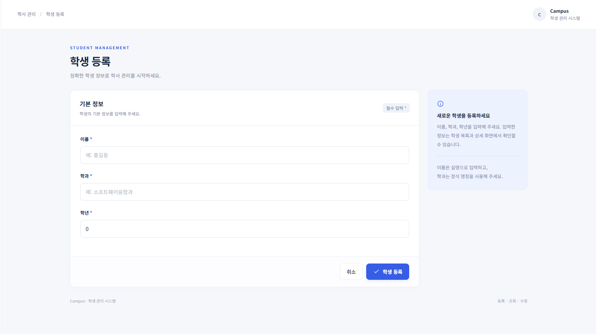
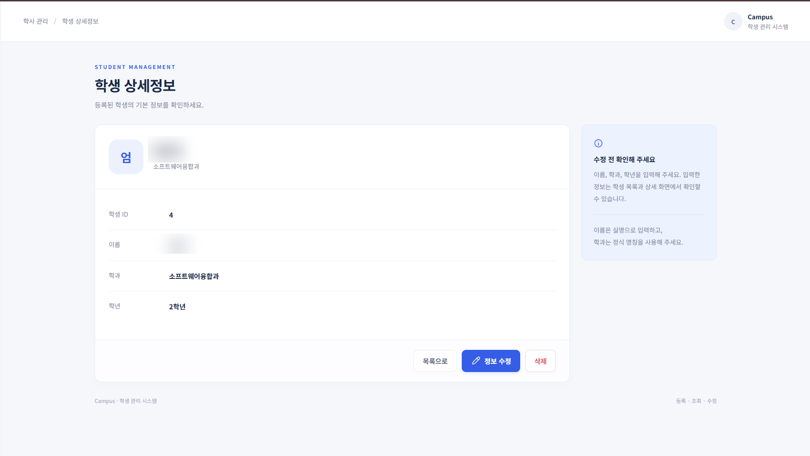
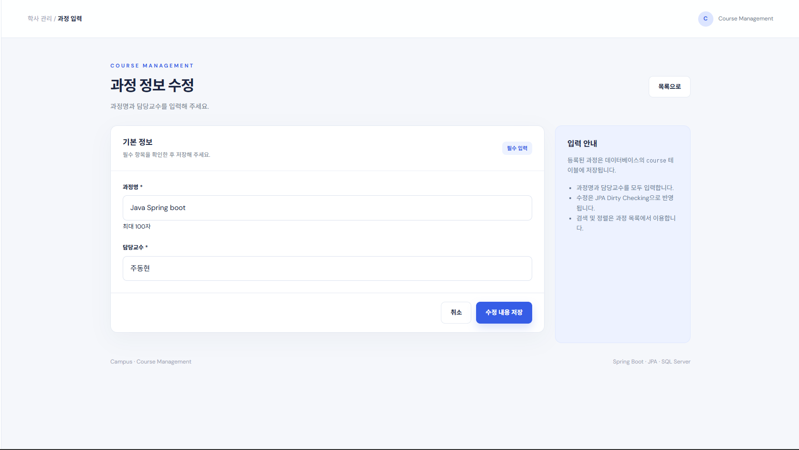

Campus — Student & Course Management
기존 MVC 학생 관리에서 Service 계층 분리와 JSON REST API까지 확장한 학사 관리 실습 프로젝트
Java 21 · Spring Boot 4.1.1 · Spring Data JPA · SQL Server · Thymeleaf · Postman
🖥️ 포트폴리오 웹페이지 (HTML) · 📷 실제 화면 · 🔗 API 명세 · 🧪 검증 · 🛠️ 시행착오
30초에 보는 프로젝트
문제 — 기존 Spring MVC 화면만으로는 앱이나 외부 클라이언트가 학생·과정 데이터를 활용하기 어렵고, Controller에서 DB 작업을 직접 처리하면 기능 확장에 불리합니다.
해결 —
Controller → Service → Repository → JPA로 역할을 나누고, MVC와 REST Controller가 같은 Service를 재사용하도록 구성했습니다. 검색·정렬·페이징과@Valid, 올바른 HTTP 상태코드, JPA Dirty Checking을 함께 적용했습니다.
| 프로젝트 정보 | 내용 |
|---|---|
| 형태 | 개인 학습·확장 프로젝트 / 한국폴리텍대학 응용프로그래밍실습 9·10주차 |
| 내가 진행한 일 | 실습 요구사항·구현 범위 정의, AI 도구를 통한 구현 진행, 실제 로컬 SQL Server 연동 및 기능별 검증, 오류 원인 확인, 실행 화면 촬영, 문서 정리 |
| AI 활용 | 9·10주차 확장 코드 및 문서 초안 생성·수정에 AI 지원 활용. 코드를 모두 수작업으로 직접 작성했다고 주장하지 않음 |
| 강의·기존 소스 | 제공된 backendintro ZIP에서 시작. 기존 학생 관련 코드의 최초 작성 기여 범위는 확정하지 않음 |
| 주요 결과 | 학생 / 과정 웹 CRUD, 과정명·담당교수 복합검색, 정렬, 5건 페이징, JSON REST API, 입력 유효성 검사 |
| 검증 근거 | HTTP 인메모리 스모크 32/32 통과(도구 실행 기록) + 실제 SQL Server 기능별 동작 사용자 로컬 검증 완료 보고(로그·SSMS 증빙은 별도 제출 전) |
실제 실행 화면
GitHub에서 이미지를 클릭하면 확대해서 볼 수 있습니다. 아래는 사용자 PC에서 직접 실행해 촬영한 화면이며, 생성형 이미지나 샘플 렌더링이 아닙니다. 공개용으로 일부 학생 식별 정보만 흐리게 처리했습니다.
|
 학생 목록이름/학과 조건 검색, 정렬, 상세 이동 |
 과정 목록과정명/담당교수 AND 검색, 정렬, 페이징 |
|
 학생 등록이름·학과·학년 검증 |
과정 등록 과정명·담당교수 필수값 입력 |
|
 학생 상세DB에서 조회한 상세정보와 수정·삭제 동선 |
 과정 수정서비스 트랜잭션 안에서 JPA 변경 감지 적용 |


이미지에서 UI 구성을 보여주는 것과 API의 HTTP 상태코드를 입증하는 것은 다릅니다. API 검증은 Postman 컬렉션과 테스트 기록에서 별도로 확인할 수 있습니다.
왜 이 구조인가?
flowchart LR
A[웹 브라우저] --> B[Student / Course MVC Controller]
C[Postman / 외부 클라이언트] --> D[Student / Course REST Controller]
B --> E[StudentService / CourseService]
D --> E
D -. 유효성 오류 .-> F[ApiExceptionHandler]
E --> G[Spring Data JPA Repository]
G --> H[(Microsoft SQL Server)]
- MVC Controller: 화면 탐색, 폼 데이터와 Thymeleaf 뷰 반환
- REST Controller: JSON 요청·응답,
ResponseEntity상태코드,@Valid처리 - Service: 트랜잭션 경계, 조건별 검색 분기, 정렬 허용 필드 제한, 수정 객체 변경 감지
- Repository:
findBy...Containing,...And...Containing과Pageable실행
중복 제거의 기준: 10주차 Course REST API는 CourseService/CourseRepository/Course Entity를 변경하지 않고 기존 9주차 Service를 공유하도록 작성했습니다. 따라서 HTML과 API로 각각 수정해도 동일한 DB 데이터를 다룹니다.
구현 기능
| 영역 | 완료된 범위 | 기술적 설명 |
|---|---|---|
| Student MVC | 목록·등록·상세·수정·삭제 | Thymeleaf, StudentController |
| Course MVC | 목록·등록·상세·수정·삭제 | CourseController, CourseService |
| 검색 | 학생 이름/학과, 과정명/담당교수 | 값 유무 4가지 경우 분기 및 AND 복합검색 |
| 정렬 | 오름차순·내림차순 | Student: id/name/major/grade; Course: id/name/teacher 화이트리스트 |
| 페이징 | 페이지 번호와 검색 조건 유지 | JPA PageRequest, Course 5건 단위, 0 기반 페이지 |
| REST CRUD | Student / Course 각각 GET·POST·PUT·DELETE | 200, 201, 204, 400, 404 구분 |
| 입력 검증 | POST·PUT 유효성 검사 | @Valid, 공통 @RestControllerAdvice, 필드별 오류 JSON |
| 수정 | JPA Dirty Checking | @Transactional 안에서 영속 Entity 필드 변경, save() 재호출 없음 |
REST API
API의 기준 주소는 http://localhost:8080입니다.
| HTTP | Course URI | 의미 / 정상 응답 |
|---|---|---|
GET |
/api/courses |
조건 검색·정렬·페이징 / 200 + Page JSON |
GET |
/api/courses/{id} |
상세 조회 / 200, 없으면 404 |
POST |
/api/courses |
과정 등록 / 201 + 생성된 ID |
PUT |
/api/courses/{id} |
과정 변경 / 200, 잘못된 값 400, 없으면 404 |
DELETE |
/api/courses/{id} |
삭제 / 204(빈 Body), 없으면 404 |
Student도 같은 패턴으로 /api/students를 제공합니다.
1. 등록 요청 (Body → raw → JSON):
POST /api/courses
Content-Type: application/json
{"name":"자바 백엔드 종합실습","teacher":"주동현"}
2. 검색 + 정렬 + 페이징:
GET /api/courses?nameKeyword=자바&teacherKeyword=주동현&sortField=name&sortDir=desc&page=0
- 이름·담당교수 검색어를 둘 다 입력하면 AND 조건입니다.
- 허용되지 않은
sortField는id로 보정합니다.page는 0부터 시작합니다. - 10주차 요구사항에 따라 Course Service의 5건 고정 페이지 계약을 유지했습니다.
- 반환값은 배열이 아니라
content,totalElements,totalPages,number등을 포함한Page<Course>의 JSON 표현입니다.
개발 과정 & 시행착오
01. 기존 코드의 책임을 확인한 뒤 확장
처음에는 학생 CRUD Controller가 DB까지 직접 호출하는 구조였습니다. 강의 지침에 맞춰 Service와 Repository 책임을 분리한 구조를 기반으로 확장했습니다. 9주차 Course 기능은 새로운 Entity·Repository·Service·MVC 흐름이 필요했지만, 10주차 REST는 Service를 다시 만들 필요가 없다는 점이 중요했습니다. 실제 구현 파일과 기존 파일을 분리해 Git 커밋 이력에 남겼습니다.
02. REST에서도 ‘성공’ 응답을 똑같이 내보내면 안 됨
처음 기능 구현만 확인하면 등록·수정·삭제가 모두 성공했다고 판단하기 쉽습니다. 그러나 등록은 201, 수정은 200, 삭제는 Body 없는 204, 없는 자원은 404가 명확해야 합니다. ResponseEntity로 분기하고, 삭제된 ID를 다시 GET 요청해 404를 확인하는 테스트 흐름까지 만들어 단순 화면 테스트와 구분했습니다.
03. Student PUT 유효성 검사 누락을 발견
원본 Student REST에서는 POST에 @Valid가 있었지만 PUT에는 빠져 있었습니다. PDF 실습의 400 오류 요구사항을 대조하는 과정에서 이를 확인했고 PUT에 적용했습니다. Course에서도 POST와 PUT 모두 @Valid를 사용해 빈 과정명·담당교수 등 잘못된 요청은 저장되지 않도록 했습니다. 검증이 실패할 때는 공통 예외 처리기가 필드별 오류 JSON을 반환합니다.
04. save() 없이 수정되는 과정을 직접 이해
Course 수정 요청은 CourseApiController → CourseService.update()로 전달됩니다. Service 트랜잭션 내부에서 영속 객체를 조회한 뒤 이름·담당교수 setter만 호출하고 save()는 다시 부르지 않습니다. 트랜잭션 커밋 때 Hibernate가 변경을 감지하여 UPDATE할 수 있다는 점이 핵심입니다. 실제 SQL Server에서의 기능별 검증은 사용자 로컬 환경에서 완료했다고 보고받았으며, SQL 로그·SSMS 캡처는 이 저장소에 포함되어 있지 않습니다.
05. DB 자격증명 설정에서 서버 기동 실패
SQL Server 연동 중 사용자 '${DB_USERNAME}'이(가) 로그인하지 못했습니다라는 오류 로그가 발생했습니다. 이것은 SQL문이나 Course API 문제가 아니라 IntelliJ 실행 환경변수가 설정되지 않아 로그인 이름이 치환되지 않은 문제였습니다. 실제 계정은 공개 설정 파일에 저장하지 않고 DB_USERNAME·DB_PASSWORD 환경변수로 공급하도록 유지했습니다. 사용자는 로컬에서 이 문제를 해결하고 기능별 테스트를 마쳤습니다.
06. 테스트를 ‘어디까지 검증했는가’로 구분
별도 Spring Boot/Tomcat 서버에 인메모리 Repository를 연결한 HTTP 검증은 32/32 통과했습니다. 이는 URL 매핑, Validation, 상태코드, 검색·페이징의 동작을 입증합니다. SQL Server JPA 트랜잭션까지 검증한 결과라고 혼동해서는 안 됩니다. 사용자 로컬 DB 테스트 완료 보고와 도구 측 HTTP 스모크 결과를 별도로 기록했습니다.
검증 근거
| 검증 항목 | 결과와 근거 |
|---|---|
| Java 컴파일 | 기존 구현 결과에서 Java 소스 13개 javac 통과 |
| HTTP 스모크 | 32/32 수행 기록 · 인메모리 Repository 테스트 |
| Postman 시나리오 | Student/Course 요청 컬렉션 · 200/201/204/400/404 검증 조건 구성 |
| SQL Server 및 기능별 동작 | 사용자가 직접 로컬 검증 완료했다고 보고. 실행 환경의 SQL 로그·SSMS 캡처는 별도 첨부되지 않음 |
| 과제 항목 대응 | 10주차 요구사항 추적표 |
로컬 실행
- Java 21, SQL Server,
BackendIntroDB를 준비합니다. DB_USERNAME/DB_PASSWORD를 IntelliJ Run Configuration → Environment variables에 설정합니다.DB_URL은 기본값이 있으며 다른 DB 주소일 때만 변경합니다.- 프로젝트 루트에서
./mvnw spring-boot:run(Windows:.\mvnw.cmd spring-boot:run)을 실행합니다. - 브라우저에서
http://localhost:8080/students,http://localhost:8080/courses를 확인합니다. - Postman 컬렉션을 import해 순서대로 실행합니다. 상세 환경변수 예시는
.env.example를 참고합니다.
로컬 주소는 본인 PC에서 서버가 실행 중일 때만 열립니다. GitHub README나 정적 소개 페이지 자체가 Spring Boot 서버를 호스팅하지는 않습니다.
내가 수행한 범위와 AI 사용 공개
- 실습 자료 / 초기 소스: 교수 제공 9·10주차 지침, 3일차 Student CRUD ZIP이 출발점입니다. 모든 코드를 개인이 처음부터 작성했다고 표현하지 않습니다.
- 본인 수행: PDF 요구조건 정리, 완성 기능/예외 케이스 점검, DB 연결 문제 해결, 로컬 SQL Server에서 기능별 검증, 실제 화면 촬영, 포트폴리오에 무엇을 보여줄지 판단했습니다.
- AI 도구 수행: 9주차 Course 확장과 10주차 REST 코드 및 자동 검증 보조, README/정적 소개 페이지 초안 작성과 문서 구조화에 활용했습니다.
- 기여도 표기 원칙: 팀 프로젝트가 아닌 개인 실습 확장입니다. '코드를 모두 직접 작성했다' 대신 요구사항을 구현 가능한 명세로 만들고 결과를 검증·설명하는 역할을 정확히 표기합니다.
GitHub Pages 공개: 이 저장소의
main /docs를 GitHub Pages에 연결하면 별도 정적 포트폴리오 사이트로 이용할 수 있습니다. 아직 실제 배포 URL은 없습니다. 배포 방법 참고.
면접에서 설명할 포인트
왜 MVC Controller와 REST Controller를 나눴나요?
HTML을 렌더링하는 클라이언트와 JSON이 필요한 클라이언트의 응답 표현이 다르기 때문입니다. 데이터 작업과 트랜잭션은 같은 Service로 재사용합니다.Course 수정에서 save()가 없어도 반영되는 이유는?
@Transactional 경계 안에서 조회한 Entity는 영속 상태이고, Hibernate가 필드 변경을 감지하여 커밋/flush 단계에서 UPDATE합니다. 트랜잭션 범위 밖의 detached Entity에는 같은 보장이 없습니다.검색과 정렬은 무엇이 핵심인가요?
이름/교수 입력 조합을 네 가지로 분리하고, URL에서 받은 정렬 필드는 허용 목록만 사용합니다. Pageable로 DB 차원에서 목록 크기와 정렬을 제한합니다.어디까지 본인 코드인가요?
기존 강의 실습 ZIP을 기반으로 생성형 AI 지원을 받아 확장했습니다. 요구사항 정의, 검증 시나리오 점검, 로컬 데이터베이스 검증과 화면 캡처 등 실제 수행 범위를 구분해 설명합니다.강의 자료: 한국폴리텍대학 부산캠퍼스 소프트웨어융합과, 응용프로그래밍실습 9·10주차. 원본 PDF의 무단 재배포 없이 과제에 맞춰 구현한 코드와 문서만 포함합니다.